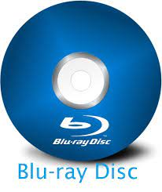

| JMStudents.in | Home | Project | About Us |
|---|
Optical storage is any storage type in which data is written and read with a laser. Typically, data is written to optical media such as compact discs (CDs) and digital versatile discs (DVDs). At one time, optical discs were considered a potential replacement for hard disk drives (HDDs) in computing systems, but their lack of growth in capacity compared to both HDDs and later flash-based solid-state drives (SSDs) has relegated optical storage use mostly to long-term archiving and data backup.
Although optical media is more durable and less vulnerable to environmental conditions than tape, HDDs and SSDs, optical discs are slower than the typical HDD and significantly slower than the SSD and offer lower storage capacities than either. Blu-ray disks are currently the fastest optical media on the market and provide much more capacity than CDs and DVDs, but they still lag behind HDDs and SSDs.
Their examples are as follow
A compact disc is a portable storage medium that can be used to record, store and play back audio, video and other data in digital form.The compact disc (CD) is a digital optical disc data storage format that was co-developed by Philips and Sony to store and play digital audio recordings. In August 1982, the first compact disc was manufactured. It was then released in October 1982 and branded as Digital Audio Compact Disc.
Compact disc (CD), a molded plastic disc containing digital data that is scanned by a laser beam for the reproduction of recorded sound and other information. Since its commercial introduction in 1982, the audio CD has almost completely replaced the phonograph disc (or record) for high-fidelity recorded music.
DVD, in full digital video disc or digital versatile disc, type of optical disc used for data storage and as a platform for multimedia. Its most prominent commercial application is for playing back recorded motion pictures and television programs (hence the designation “digital video disc”), though read-only, recordable, and even erasable and rewritable versions can be used on personal computers to store large quantities of almost any kind of data (hence “digital versatile disc”).
The Blu-ray Disc (BD), often known simply as Blu-ray, is a digital optical disc storage format. It is designed to supersede the DVD format, and capable of storing several hours of high-definition video (HDTV 720p and 1080p). The main application of Blu-ray is as a medium for video material such as feature films and for the physical distribution of video games for the PlayStation 3, PlayStation 4, PlayStation 5, Xbox One, and Xbox Series X. The name "Blu-ray" refers to the blue laser (which is actually a violet laser) used to read the disc, which allows information to be stored at a greater density than is possible with the longer-wavelength red laser used for DVDs.
Thanks for visiting |
|---|